Automatizando la instalación de arch linux.
Table of contents
Automatizando la instalación de Arch linux
Recientemente he reinstalado mi arch linux para reorganizar mis particiones y encriptar la home. Hace mas de 4 años que andaba sin problemas desde la ultima instalación pero he visto la necesidad de reorganizar el espació. Tenia la home a 70% y la partición para discos virtuales a 30% y un caos en la organización, ademas de haber instaldo particiones sin encriptación, etc.
Llegados a este punto he decidido, mientras instalaba arch, crear un script para automatizar un poco la instalación. La verdad es que tengo la instalación por la mano ya que he instalado arch muchas veces en diferentes ordenadores y maquinas virtuales pero se hace un poco tedioso. También espero que ayude a otros a probar arch ahunque no me convenza mucho que solo den soporte a systemd.
El script
Podeis encontrar el script en mi repositorio. Una vez iniciado el cd de instalación de arch, configurado el teclado y la conexión a internet, solo queda descargar el script y ejecutar. O si podeis copiar el script de algun modo, os puede ayudar tambien a configurar el teclado y la red.
Menú principal
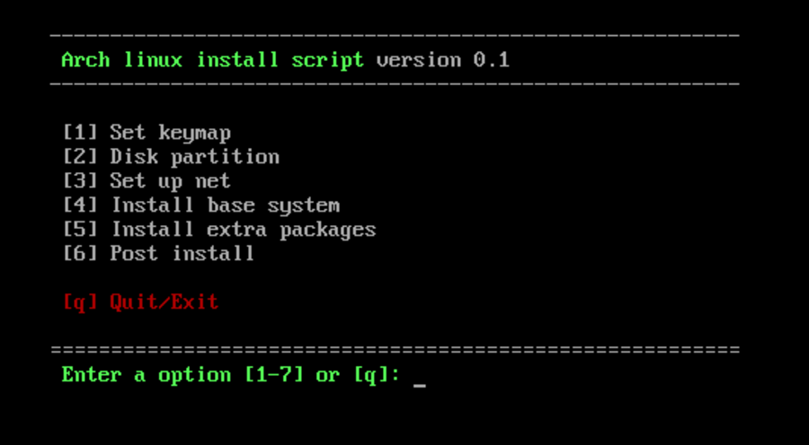
Configuración de la red
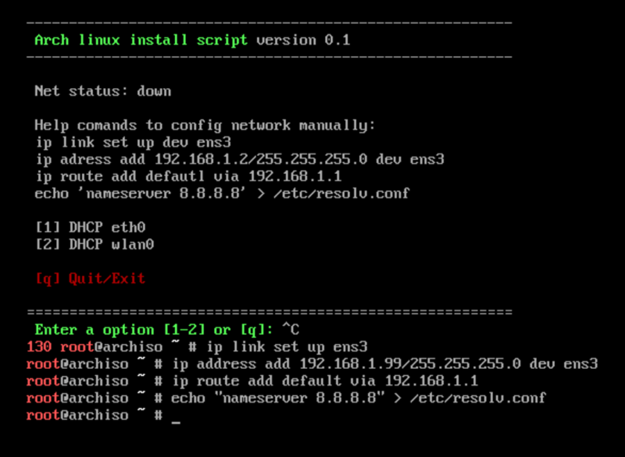
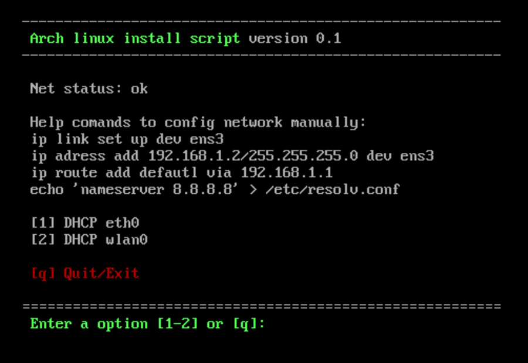
Particionado del disco
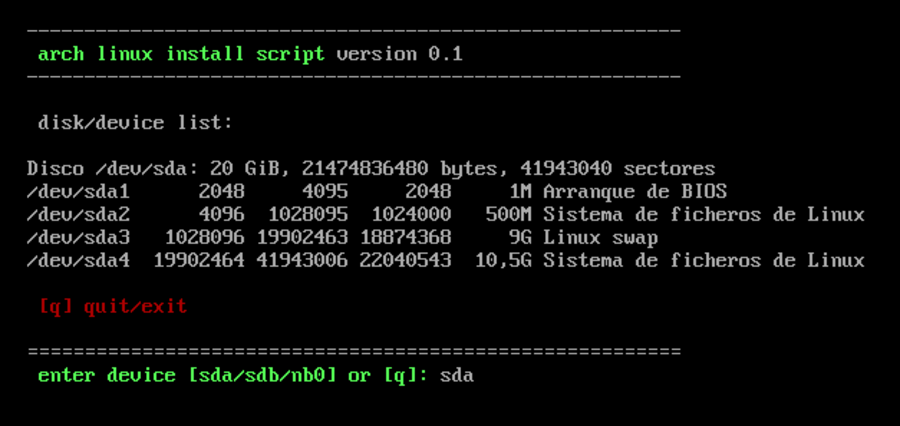
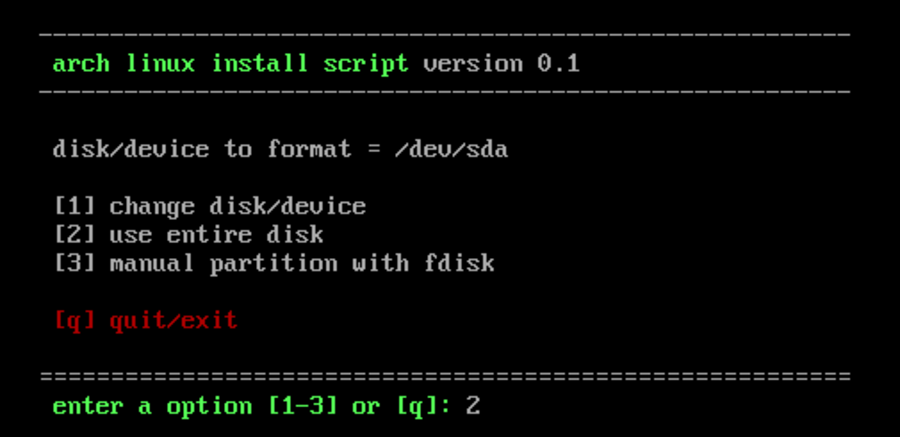
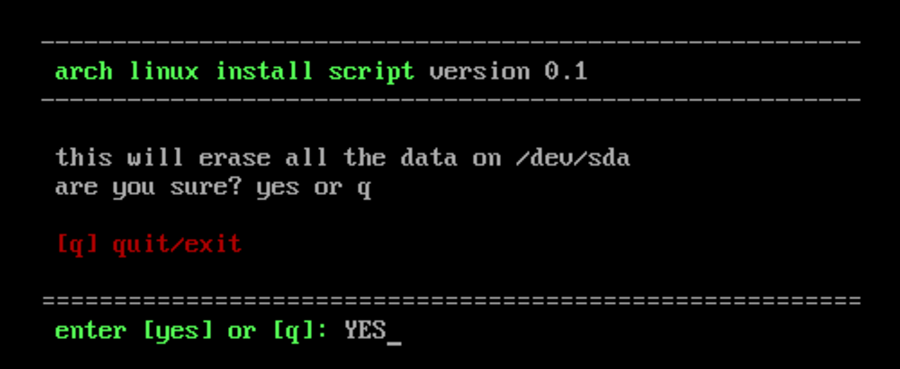
Instalando el systema base
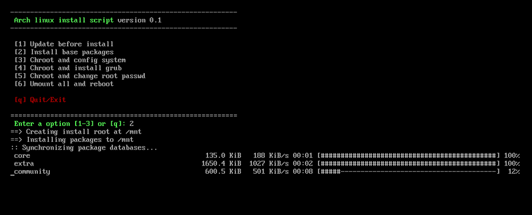
Instalando grub
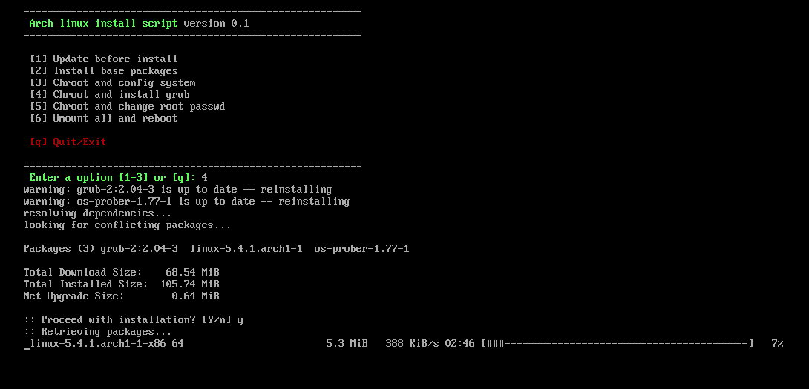
Cambiando el password de root
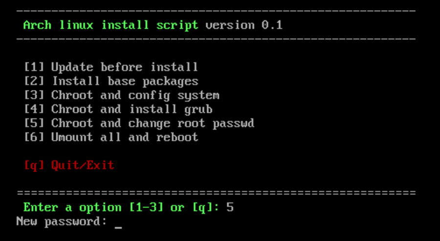
Instalando paquetes extra
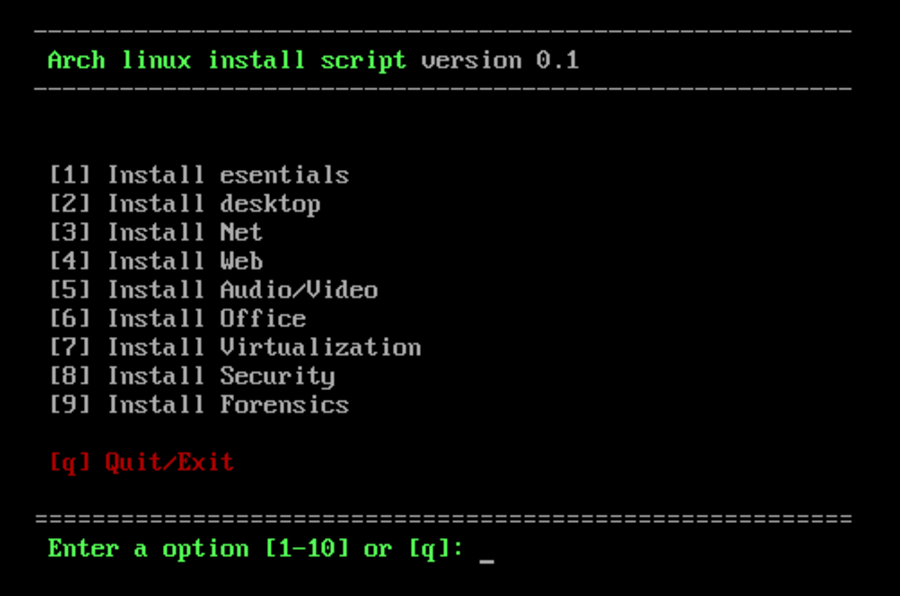
Post instalación
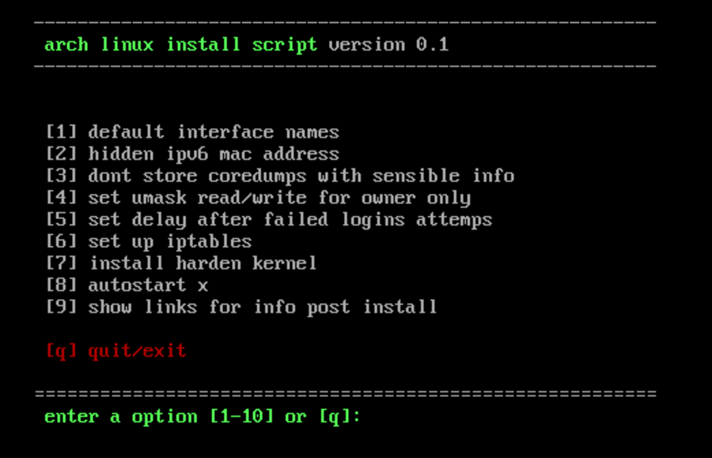
Referencias:
Licencia: CC-BY-SA